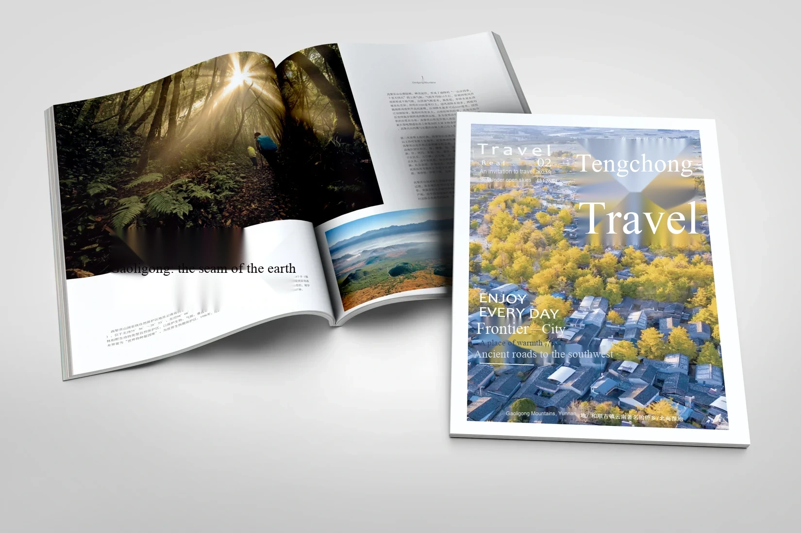
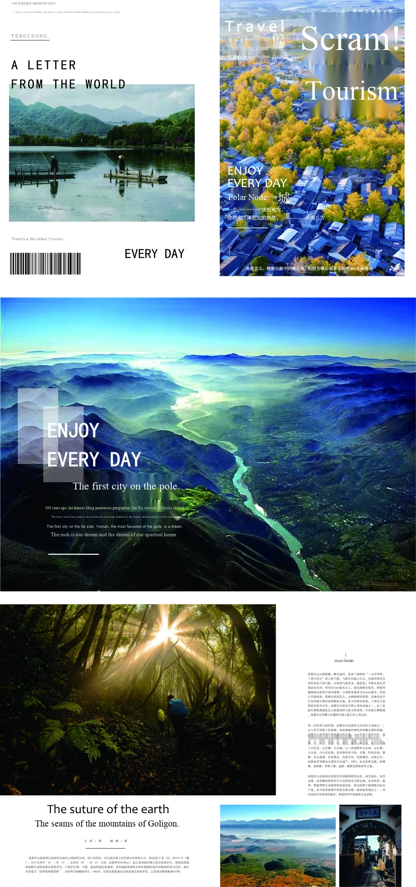

Culture & publishing
A Letter from the Land
A travel magazine that moves between a mountain town, the peaks around it and the forest floor.


The Measure of Silence
A 26-page exhibition catalogue and proposal · Yixin Art Studio. These three images move from soft washes to a sharply defined opening.